Luego de realizar los 4 primeros pasos de tu proyecto, debes proceder a llenar Informe Red de Paz - Manada... tal cual te mostramos a continuación:
Importante... Antes de llenar la Planilla en línea: Informe Red de Paz - Manada (con lo cual se completan los requisitos del informe), te recomendamos leer las instrucciones que aparecen más abajo, de tal forma que tengas a la mano toda la información necesaria.
Luego simplemente pulsa el botón y esto abrirá la planilla en una pestaña nueva.
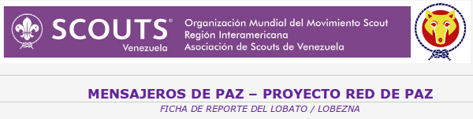
Con este encabezado se identifica el formulario para la Manada.
Nota: las casillas que tienen un * deber ser llenadas obligatoriamente, o no se puede enviar el reporte.
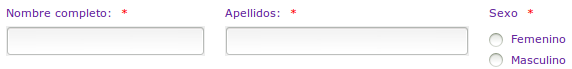
En estas casillas deberás escribir tus datos personales, tal como nombres, apellidos, sexo, edad, etc...
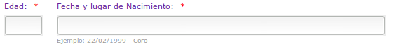
El formato que se debe usar para las fechas es dd/mm/aaaa, Ej.: 22/02/2003 - Churuguara
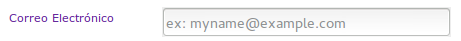
Es muy recomendable que des una dirección de correo donde escribirte.
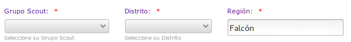
Con estas listas desplegables debes escoger a que grupo y distrito perteneces.
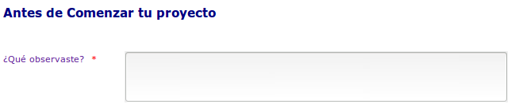
Describe brevemente que observaste que llamó tu atención.
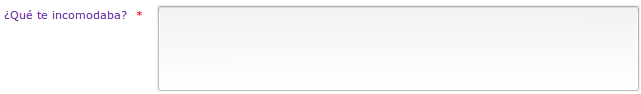
Anota aquí las actitudes y situaciones que te causaban incomodidad o enojo con respecto al tema del Acoso Escolar.
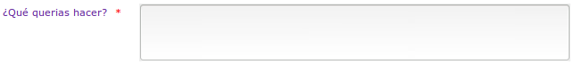
Una vez hecho el primer análisis describe aquí que fue lo que se te ocurrió como una solución posible.
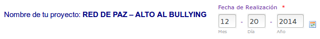
Utilizado las casillas desplegables seleccionar la fecha de ejecución del Proyecto.
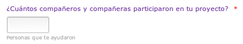Indicar aquí cuantas personas te ayudaron en la ejecución del proyecto, incluso si no son Scouts.
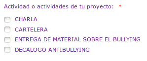Señalar las casillas de las actividades realizadas. para eso simplemente debes pinchar las casillas de verificación que están al lado de cada actividad.
Lo que se busca es que sea realicen todas las actividades del Proyecto, ya que así se estará garantizando que se llevó el mensaje de forma efectiva.
Utilizando este botón debes subir las tres fotos solicitadas.
Será una de cada actividad realizada (charla, entrega del material y cartelera).
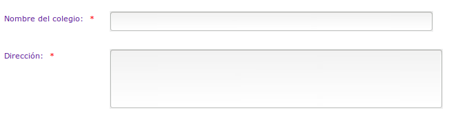
Indica el nombre completo de la Escuela, Colegio o Liceo, donde llevaste a cabo el proyecto.
Así mismo escribe la dirección completa del mismo.
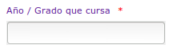Escribe aquí el grado o año que cursas.
Lo ideal es que apliques el proyecto en tu misma aula.
Es indispensable que coloque el nombre completo de la maestra, maestro, profesora o profesor que estuvo presente el día de la ejecución del proyecto.
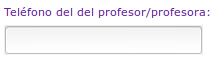
Ella o el debe dar su opinión sobre tu desempeño en la charla y demás actividades.
También es importante que coloque un número de teléfono donde comunicarse con el docente.
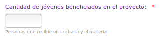Anota aquí cuantos niños, niñas y/o jóvenes se beneficiarion con la actividad.
Es decir, el número total de alumnos que había en el salón al momento de hacer las actividades.
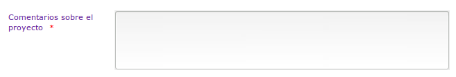
Anota los comentarios hechos por el docente, sobre la actividad.
Una vez que hayas llenado todo, pulsa este botón para enviar el formulario.